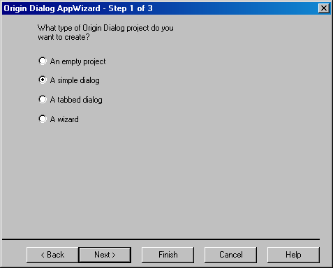
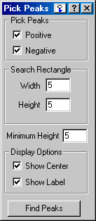
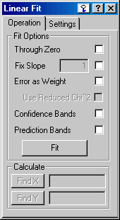
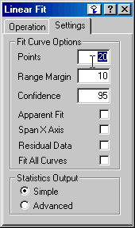
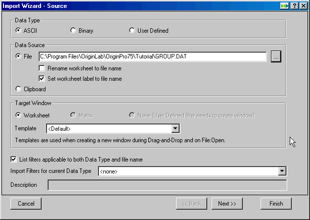

Choosing the Project Type for your Dialog
The first page in the Origin Dialog AppWizard allows you to select the type of project or resource you want to create.

- 1 Select the Empty Project radio button and click Finish to create an empty project without any dialogs.
- 2 Select the Simple Dialog radio button to create a simple dialog which will not have any pages or tabs. However, you will be able to add controls such as edit boxes, check boxes, and radio buttons to the dialog.

- 3 Select the Tabbed Dialog radio button to create a tabbed dialog which will have two or more tabs. You will be able to add controls to the main dialog and to each of its tabs.
 
- 4 Select the Wizard radio button to create a wizard which will have two or more wizard pages. You will be able to add controls to the main dialog and to each of its pages.

After selecting the Simple Dialog, Tabbed Dialog, or Wizard radio button, click the Next button at the bottom of the Origin Dialog AppWizard. You will then be prompted for the programming language you want to use to control the dialog.